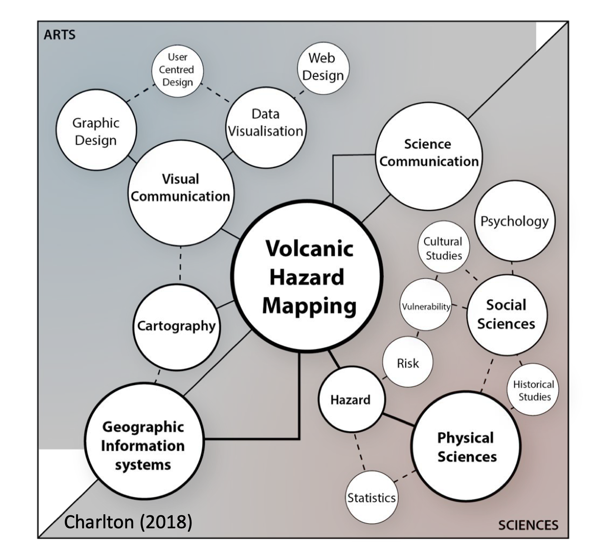

Understanding hazard maps
Objectives
- Read, understand and interpret hazard maps.
- Identify the main types of hazard maps and their importance.
- Recognize the role of map design on hazard communication.
What is a hazard map and why is important?
A hazard map is a spatial representation of the footprint of a given volcanic phenomenon. The number of elements and design of the map play a key role on hazard communication.
What's the secret code behing hazard map lines?
A clear meaning of each line in a map is fundamental for the reader to understand the message. Discover the legend and additional information of the Mt. Iwate hazard map in its complete version.
A hazard map must include:
 The inundation of the area that can be potentially reached. It could be the surface covered by a deposition of pyroclastic material (e.g., sedimentation of tephra); and/or the areas affected by the path of the phenomena itself (e.g., the flow passage).
The inundation of the area that can be potentially reached. It could be the surface covered by a deposition of pyroclastic material (e.g., sedimentation of tephra); and/or the areas affected by the path of the phenomena itself (e.g., the flow passage).
Estimation of the hazard intensity metrics (e.g., tephra mass load [kg/m2], lahar dynamic pressure [kPa], ballistics impact energy [J]).
Hazard maps are indispensable to communicate the distribution, intensity and/or magnitude of hazards. They are crucial to target the areas that can be potentially exposed to volcanic phenomena and therefore, to inform decision-makers in order to develop risk and crisis management strategies such as evacuation plans, prioritisation measures, future building codes, etc.
Types of hazard maps
As part of the International Association of Volcanology and Chemistry of the Earth’s Interior [IAVCEI], the special Commission on Volcanic Hazard and Risk has been working during the last decade to ensure better practices on how we define and display volcanic hazards. One of the major topics involving an invaluable amount of work is the compilation and organization of more than 1800 maps in the catalogue Volcanic Hazard Maps.
Initially, Calder et al. (2015)1 classified hazard maps in 5 main categories:

However, with the increase of number of maps and a deeper understanding of methodologies, it was rapidly understood that the complexity associated with various volcanic phenomena, most of times, for the same volcano, required a more comprehensive categorisation. For this reason the Volcanic Hazard Maps database was developed as an answer to a basic need in volcanology. Details on how this database has been constructed are available in Ogburn et al. (2023)2.
The diversity of maps has been therefore classified in 10 aspects in a very versatile database: hazard process type, hazard zone presentation, temporal scale, spatial scale, publicaiton format, zonation methodology, scenario types, hazard zone labels and probability definition, purpose and audience, language, map design and cartographic elements.
For this lecture, we will only focus on the maps classified by hazard process type, spatial and temporal scales and hazard zonation methodologies, but you can of course spend some time exploring all this diversity.
Hazard process type
What volcanic hazard do you think is the most frequently represented in maps?
Maps per type of hazard
Most of studies are related to the frequency of phenomena:
- events with high probability of occurrence are the most represented in maps: tephra fallout, pyroclastic density currents and lahars followed by lava flows and ballistics.
- low probability hazards are less studied, but they are often the most impactful ones!!: debris avalanches, lateral blasts; or long-lasting secondary hazards: floods, tsunamis, fire.
Certain volcanic phenomena are more understood (e.g., PDC, tephra) and/or certain volcanoes are more studied (better monitored)
A significant difference respect to other natural hazards is that 1 map can show 1 single or multiple hazards due to the multi-hazard nature of volcanic eruptions!!
Space and time scales
Depending on the knowledge of a given volcano, and the characteristics of the hazard assessment, maps can be designed during the volcano in quiescence (background activity → long-term hazard assessments) or during the eruption (crisis → shor-term hazard assessments). Information about the objective or time references are evidences of the temporal scale applied in the map.
On the other hand, depending on the level of detail, a hazard map can specifically focus on specific flanks of the volcano, on the volcano itself or on a regional surface showing larger inondated areas.
The purpose and target audience of the map is crucial to design a map in the correct space and time scales. One might expect a high detail and continuously updated hazard map when analysing the evacuation routes of a small town. Contrastingly, a regional -often international- scale might be expected when analysing the concentration of ash in the atmosphere for aviation disruption.
The multiplicity of potential users involved in hazard and risk encourages better communication tools and co-designing strategies!!
Hazard zonation methodology
One of the major challenges of volcanic hazard assessments [HA] is the methodology to delimitate hazard zones.
What does it mean?
Once we get the outcomes of [HA], we need to decide what would be the hazard zones!
In other words...
Ideally, the main [HA] outcome involves the understanding of past activity of a given volcano as well as the potential future scenarios. In one way or the other, all [HA] are based on the geologic history of the volcano, but currently these assessments are completed more and more by numerical models; and more recently by community participatory approaches.
The outputs of these assessments provide the extension and the hazard metrics in a raw manner.
The challenge consists to decide how to select hazard zones out of those... where to draw the low, medium and high hazard zones!.
Ogburn et al. (2023)2 identified 5 main categories of zonation methodologies:
Volcanic hazard assessments and the amount of hazard maps are continuously increasing and are a crucial topic of researchers and risk managers.
According to Ogburn et al. (2023)2, early maps, in the 60s, were practically all geology-based. Then, empirical models of physical processes, in particular the energy cone model of Sheridan in 19793 marked a before and an after in volcanic hazard assessments. During the 70s to 90s, a large number of maps were developed based on scenario-based modelling.
Since 2003, when physical models could be run probabillistically, a massive wave of knowledge and computing resources were developed, resulting in a large number of probabilistic maps (particularly for lahars: LAHARZ, TITAN2D; and tephra: TEPHRA2, ASH3D).
Finally, and as a response of community and risk managers needs, the design of derived maps attracted considerable interest since 2010s. This has been particularly fostered by the US Geological Survey in the Cascades volcanoes and the Japan Meteorological Agency to standardize eruption alert leaflets.
Understanding hazard maps
"Although maps are everyday tools for volcanologists, they are often too abstract and difficult for many users of volcano warnings” (Newhall 2000, p11904).
Despite the increasing understanding and development of volcanic hazard maps, the final goal to inform spatial distribution of hazards in a manner that can be useful and usable for risk reduction is still at immature stages.
Let's try with following exercises to train our reading and interpretation of hazard maps.
A fast check list of map elements could be:
Spatial extent (inundation) of the phenomenon (or phenomena) considered.
Clear Hazard Intensity Metric [HIM] units.
Spatial scale.
Clear definition of hazard zones.
Explanatory legend or associated report including the terminology used, the basic concepts on which is based, statistics meaning, zonation methodologies.
Here we just summarize few aspects that are fundamental to consider when designing maps if we are to contribute to volcanic hazard communication!
1. Critical importance of purpose and audience
Sakurajima hazard map
Take some time to read and interpret the information provided in the Sakurajima hazard map
-
Could you list 3 key information that you can extract from this map?
-
Which are the volcanic phenomena represented in this map?
-
Could you explain why this map has been classified as a hazard map and discuss the map properties. Would you have classified differently? If yes, why?
-
What could be the most appropriate final user for this map?
How to identify hazard and risk maps?
In general, all hazard maps need some training to be understood and implemented, as the intended message is not always effective, leading to confusion or scepticism among audiences. Volcanic hazard maps are particularly complicated to read since generally tend to cover many information and most of times about various hazards.
Probably a scientist would expect something different for Sakurajima hazard map; however, this map has been catalogued as a derived hazard map where the purpose and audience is explicitly defined: local residents in the event that they need to evacuate. Sakurajima map does the job, although it is quite saturated with much more information.
There is a large discussion in the scientists community since most of risk terms are often indistinctly used, and this confusion is then reflected in maps. Derived maps are particularly fuzzy in these terms, since they generally overlap hazard lines with critical emergency/facilities elements. The meaning of Sakurajima map lines is clearly defined, delimiting the when and how a volcanic phenomena is expected, hence, the exposure elements on the background are informative and not interefering with vulnerability and/or resilience metrics.
Popocatepétl hazard map
Take some time to read and interpret the information provided in the Popocatepétl hazard map
This is -unfortunately- an exercise only for spanish speakers...
- Do you think that the purpose of these maps are clearly exposed?
- Could you say something about the methodology used to build these maps?
- Are these maps deterministic or probabilistic?
- Do you think that probability is represented in this map? if yes, how?
Purpose and audience
Popocatepétl hazard map provides complete information about all the different hazards in separate panels. It is good for the target end-users describing a clear purpose from which we can infer the audience: citizen education and preparedness. however is available only in spanish. Sakurajima map was for example designed in several languages.
The methodology is well-exposed describing that these maps are based on field constrain plus the estimation of probabilities of occurrence for different eruptive styles. Apart of the avalanches map, they all seem to be probabilistic maps; although there is not a precise meaning of probabilities and why the thresholds were selected.
The use of separate maps representing each phenomena helps the reader. However, according to Thompson et al. (2015)5....
sometimes residents would like to see if their land is going to be affected given an eruption, independently of distinguishing among volcanic phenomena (Thompson et al. (20155).
Although there is not a precise meaning of probabilities for the different phenomena, there is a translation of complex probability maps (model outputs) to simplified language.
Derived maps are the result of long discussions and interesting multi-disciplinary approaches!!
2. Map features and hazard communication
The maps analysed in this exercise have been especially designed for a hazard communication study published by Thompson et al. (2015)5 with the seek of understanding the relevant role that properties of probabilistic hazard maps play on how we communicate hazards.
This study was based on a very interesting workshop with scientists experts and general public to understand the impact of [HM] on the end-user. It is important to notice that the results of this study obey to a survey where 60% of participants were New Zealand european people; 65% with postgraduate/graduate degrees! Outcomes are interesting however to extrapolate to other volcanic cases. But especially as an example of survey to be conducted in other contexts. You can also explore further the complete survey ... here we focus only in few aspects regarding map features:
Tarawera hazard maps: legibility

Based on the maps A-B-C:
- If Tarawera were to erupt, what is the probability of accumulating 1 mm of volcanic ash at Whakatane?
- Which of the 3 maps is easy to read? Justify your answers
Map data classification
A key aspect to consider when designing a [HM] is the visual categorisation of the dataset values. In particular, numerical modelling outcomes involve a large range of values that need to be classified in the most efficient visualization way. These values can be stretched in gradational scales or discrete bins with specific colours.
- Gradational colour schemes with isolines delimiting classes were found the most efficient to read maps with higher precision. In particular, interviewees noticed that binned maps can make think that there is a big difference between one side and the other of the boundary!
- Gradational scales are also favourable because represent the transitional nature of hazards decreasing in intensity with distance to the source.
- Smooth isolines with intervals of 10% probability, instead of abrupt limits such binned maps, facilitate the reading. Labels in the isolines contribute to fast reading and avoid confusion related to coulour symbology.
Tarawera hazard maps: probability meaning
Considering that Maps D-E are two different types of probabilistic hazard maps,
- What does the Map D show?
- What does the map E show?
- If Tarawera were to erupt, which map would you use to assess the potential impacts on houses, roads and the airport of Whakatane?
Map content
The content of a map is sensitively dependent on end-users and purpose.
In general, some (few) background assets are useful as reference points (e.g., boundaries, rivers), but hazard maps should restrict the amount of exposed elements in order to avoid confusion with exposure, vulnerability or risk maps.
 This is particularly challenging with derived maps that are simplified for crisis or risk management purposes (e.g., Sakurajima hazard map).
This is particularly challenging with derived maps that are simplified for crisis or risk management purposes (e.g., Sakurajima hazard map).
Concerning hazard content the end-user interpretation is really crucial. From a scientist point of view, precision on [HIM] is fundamental. For residents, the main concern would be the possibility of any tephra at all impacting their land (10 mm was already to high for certain interviewees).
In words of an interviewee (Thompson et al. (2015)5): "The question is 'Will I get ash?'...Not, 'how much will I get?'...They're not sort of thinking 'We can do this with 10 milimeters; we can do this with 100'. It's kind of 'We have to deal with volcanic ash'".
Many participants therefore suggest that additional text explaining the possible impacts associated with a given ash thickness would make the map more relevant and useful.
Tarawera hazard maps: colour schemes

Based on these sets of maps, Set A – Set B – Set C :
- Which colour scheme do you think describes better the tephra hazard intensity? Why?
- Do you think that these colour schemes can be used indistinctly for other volcanic hazards? Justify your answers?
Colour schemes and legend
The choice of the colour scheme is largely dependent on how hazard zones are defined and visualized in the map.
Concerning colour scales:
- Red-blue are associated with dangerous/no dangerous; hazard presence/hazard absence; and this has implications spcially with low probability areas that could be considered as "safe".
- Red-yellow-blue scales are automatically associated with weather or floods hazard maps. They could be useful for lahars but misleading for tephra maps.
- Red-yellow are by far the most used scales in the Volcanic Hazard Maps database (~30%).
Colour blind scales might be adopted!! This is something that is rarely taken in consideration but is definitely very important for hazard communication. Crameri et al. (2020)6 expose an interesting resource to consider for colour schemes in hazard maps!
3. Zonation methodologies
Nevado del Ruiz hazard maps: the multi-hazard aspect of volcanic eruptions
Multi-hazard maps
Multi-hazard maps provide a fast visualisation of the different expected hazards and their inundation areas for the same volcano.
The complexity lies on how to combine the different [HIM], that are often a mixture of qualitative and quantitative values.
There is no standard guidelines for the classification of hazard zones -for each single phenomena-; so, there is still quite a lot to build on multi-hazard frameworks.
In particular, maps including various hazards are very difficult to read. A single phenomenon is already challenging; the combination of various phenomenon with different [HIM] in 1 single image considerably increases this complexity.
Other challenges and limitations
A good volcanic hazard map involve many challenges!
As a general rule, all maps are based in the geological record (either directly or to constrain the model input parameters). Therefore a major limitation lies in how to constrain the incompleteness of the geological record. This analysis is often biased towards the bigger events since big deposits are also well-preserved.
Comprehensive field studies are still scarce; and, in many cases, scenarios and eruptive parameters do not reflect the large range of possible scenarios.
An additional limitation is the geographical access to the deposits that are often difficult and dangerous, particularly in on-going eruptions. We also need to understand human limitations when facing such a huge natural event!
Another aspect to consider is that volcanoes do not understand about boundaries: many volcanoes are located in international borders (e.g., Chiles-Cerro Negro in Ecuador-Colombia) and/or impacted areas cross administrative boundaries (e.g., almost all volcanoes in Chile-Argentina) &rarr, this has significant implications in risk management but also in field work of volcanic deposits!!
Finally, hazard uncertainties (aleatory and epistemic) are difficult to quantify and to represent in maps! You can find more on this in Probabilistic modeling part II!
Future efforts
"It is impossible to achieve a wholly objective representation of complex reality on a map (Thompson et al. (2015)5)."
Objective frameworks for each volcanic phenomenon (including methodologies, homogenized terminology, standardised outputs and uncertainty quantification) might help to reduce miscommunication of volcanic hazard maps.
We still need to work on numerical and statistical modelling and big data analysis in order to build good quality hazard assessments and outcomes.
A better understanding of the impact of hazard mapping in risk communication is required. Integral studies in different countries and various audiences (e.g., stakeholders, decision-makers, emergency managers) would help to bridge the gap between scientists and map end-users.
Social media are in nowadays an important tool for information sharing. Warning systems and emergency management need up-to-date information, and hence, images and maps ready to be disseminated. Efficient strategies to derive simplified maps from sophisticated hazard maps in real time are therefore crucial for hazard communication.
Better strategies of communication and credibility are fundamental in the communication of risk. Global agreements on the official channels to disseminate hazard maps need to be established. The [IAVCEI] Commission on Volcanic Hazards and Risk plays a fundamental role on this goal!
Final thought: map design is an interdisciplinary process!

Summary
In this class we learn:
- How to read, understand and interpret hazard maps.
- How to identify different types of hazard maps and their importance.
- How to recognize the main map features that are crucial for hazard communication.
References
-
Calder ES, Wagner K, Ogburn SE. Volcanic hazard maps. Global volcanic hazards and risk, 2015. ↩
-
Ogburn SE, Charlton D, Norgaard D, Wright HM, Calder ES, Lindsay J, et al. The Volcanic Hazard Maps Database: an initiative of the IAVCEI Commission on Volcanic Hazards and Risk. Journal of Applied Volcanology 2023;12:1–25. https://doi.org/10.1186/s13617-022-00128-9. ↩↩↩
-
Sheridan MF. Emplacement of pyroclastic flows: A review. Ash Flow Tuffs: Geological Society of America Special Paper 1979;180:125–36. ↩
-
Newhall CG. Volcano warnings. Encyclopedia of Volcanoes 2000:1185–97. ↩
-
Thompson MA, Lindsay JM, Gaillard J-C. The influence of probabilistic volcanic hazard map properties on hazard communication. Journal of Applied Volcanology 2015;4:1–24. ↩↩↩↩↩
-
Crameri F, Shephard GE, Heron PJ. The misuse of colour in science communication. Nature Communications 2020;11:5444. ↩